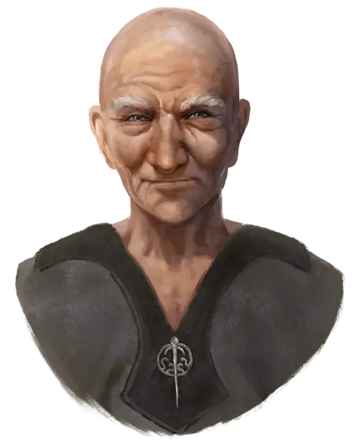

Хлэм
Hlam
Средний Гуманоид (Человек), законно-добрый, именной НИП

Класс Доспеха 22 (защита без доспехов)
Хиты 137 (25к8 + 25)
Скорость 60 футов
| мод | спас | ||
|---|---|---|---|
| СИЛ | 11 | +0 | +5 |
| ЛОВ | 24 | +7 | +12 |
| ТЕЛ | 13 | +1 | +1 |
| мод | спас | ||
|---|---|---|---|
| ИНТ | 14 | +2 | +2 |
| МДР | 21 | +5 | +5 |
| ХАР | 14 | +2 | +2 |
Навыки Атлетика +5, Религия +7
Сопротивление урону яд
Иммунитет к состояниям отравление, очарование, испуг
Чувства пассивное Восприятие 15
Языки Все
Опасность 16 (15000 опыта)
Бонус мастерства +5
Особенности
Защита без доспехов. Пока Хлэм не носит ни доспехи, ни щит, к КД прибавляется его модификатор Мудрости.
Уклонение. Если Хлэм попадает под действие эффекта, позволяющего совершить спасбросок Ловкости, чтобы получить только половину урона, она вместо этого не получает урона при успешном спасброске и получает только половину урона при проваленном.
Магические атаки. Безоружные атаки Хлэма являются магическими.
Использование заклинаний. Хлэм является заклинателем 5-го уровня. Его базовой характеристикой является Мудрость (Сл спасброска от заклинаний 18, 10 к попаданию заклинаниями). У Хлэма есть следующие подготовленные заклинания жреца:
• Заговоры (неограниченно): указание [guidance], свет [light], священное пламя [sacred flame], уход за умирающим [spare the dying].
• 1 уровень (4 ячейки): обнаружение зла и добра [detect eviil and good], лечащее слово [healing word], убежище [sanctuary], щит веры [shield of faith].
• 2 уровень (3 ячейки): умиротворение [calm emotions], молебен лечения [prayer of healing], тишина [silence].
• 3 уровень (3 ячейки): защита от энергии [protection from energy], снятие проклятья [remove curse], послание [sending].
Действия
Мультиатака. Хлэм совершает три безоружных удара, три атаки дротиком или и тем и другим вместе.
Безоружный удар. Рукопашная атака оружием: +12 к попаданию, досягаемость 5 футов, одна цель. Попадание: Дробящий урон 12 (1к10 + 7). Если цель является существом, адепт может выбрать один из следующих дополнительных эффектов:
• Цель должна преуспеть в спасброске Силы Сл 18, а иначе роняет один носимый предмет на выбор адепта.
• Цель должна преуспеть в спасброске Ловкости Сл 18 или будет сбита с ног.
• Цель должна преуспеть в спасброске Телосложения Сл 18, или станет ошеломлённой до конца следующего хода адепта.
Дротик. Дальнобойная атака оружием: +12 к попаданию, дистанция 20/60 футов, одна цель. Попадание: Колющий урон 9 (1к4 + 7)
Дрожащая ладонь (перезарядка 6). Рукопашная атака оружием: +12 к попаданию, досягаемость 5 футов, одно существо. Попадание: цель должна совершить спасбросок Телосложения Сл 18. В случае провала хиты цели снижаются до 0. В случае успеха цель получает 55 (10к10) урона некротической энергией.
Единство тела (перезарядка после продолжительного отдыха). Хлэм восстанавливает 60 хитов.
Реакции
Отражение снарядов. Хлэм может реакцией поймать снаряд, если по нему попали дальнобойной атакой оружием. Урон от этой атаки уменьшается на 1к10 + 27. Если урон уменьшился до 0, Хлэм ловит снаряд, если тот достаточно мал, чтобы держать его одной рукой, и у него есть свободная рука.
Медленное падение. Хлэм уменьшает дробящий урон, получаемый от падения, на 100.
Легендарные действия
Хлэм может совершить 3 легендарных действия, выбирая из представленных ниже вариантов. За один раз можно использовать только одно легендарное действие, и только в конце хода другого существа. Хлэм восстанавливает использованные легендарные действия в начале своего хода.
Быстрый шаг. Хлэм перемещается на свою скорость не провоцируя при этом атак.
Безоружный удар (стоит 2 действия). Хлэм совершает один безоружный удар.
Невидимость (стоит 3 действия). Хлэм становится невидимым до конца своего следующего хода. Эффект прекращается, если Хлэм атакует или накладывает заклинание.
Описание
Этот человек-монах преклонных лет живёт в пещере высоко на склоне горы Глубоководья. Хлэм — магистр Ордена Беспристрастного, небольшой группы монахов, служащей Тиру. Порой к нему приходят те, кто хочет стать его учеником и познать Путь Священных Кулаков — сочетание жреческой магии и монашеской подготовки.
Обычно они возвращаются в город смущёнными и побитыми и больше об этом не заикаются.
В час великой опасности Хлэма можно позвать на помощь. Иногда он поделится мудрым советом, а иногда спустится из пещеры и молча поправит всё кулаками.
В сюжете он может появиться в любой момент как помощник, также персонажи могут посетить его пещеру в поисках наставления или подготовки. Он считается верным союзником Ордена Перчатки.
Хлэм невосприимчив к болезням, ему не нужны пища и вода. Он стареет, но не слабеет с годами.